Comparação indireta
Dois remédios que nunca se encontraram
ALPINE
ELEVATE-RR
ibrutinibe
ponto em comum
zanubrutinibe
acalabrutinibe
?
e o zanubrutinibe contra o acalabrutinibe?
Um ponto em comum,
nenhum encontro direto
A armadilha lógica
João > Pedro e Pedro > Carlos… logo João > Carlos?
Corrida 1
Corrida 2
João
Pedro
João > Pedro
Pedro
Carlos
Pedro > Carlos
João
×
Carlos ?
nunca correram na mesma pista
pacientes diferentes
épocas diferentes
critérios diferentes
João ≈ zanubrutinibe · Pedro ≈ ibrutinibe · Carlos ≈ acalabrutinibe
Pistas diferentes →
conclusão frágil
Atenção
Comparação indireta é pista, não prova
Comparação indireta
gera hipóteses · orienta perguntas
PISTA
≠
Estudo head-to-head
mesmos pacientes, época e critérios
PROVA
Comparação indireta
não substitui
um estudo head-to-head
Vale como
pista
, não como prova
MAIC · comparação indireta ajustada por pareamento
Montando um “gêmeo estatístico”
ALPINE · dados de cada paciente
Estudo do acalabrutinibe · só a média
resultado médio publicado
mais peso a quem mais se parece
≈
≈
≈
pesos e médias ilustrativos · IPD = dados individuais de pacientes
Plateias parecidas →
comparação mais justa
Detalhe técnico
Sem braço em comum: MAIC não ancorado
Ancorado
os dois estudos têm um braço em comum
braço comum
remédio A
remédio B
mais robusto
Não ancorado
sem braço em comum: braços isolados
zanubrutinibe
acalabrutinibe
depende de ajustar todas as diferenças relevantes
mais frágil
este MAIC
Não ancorado =
mais frágil
que o triângulo com o ibrutinibe
MAIC melhora a conta,
mas continua sendo pista
◀
❚❚
▶